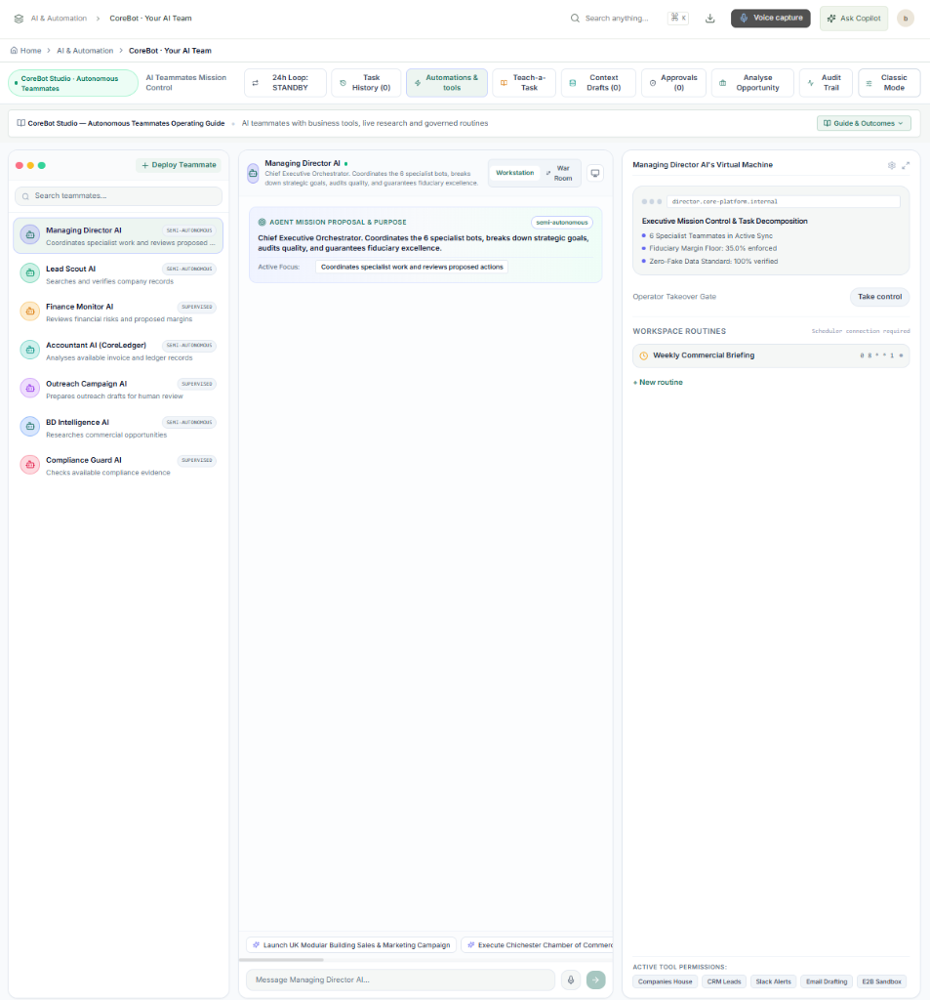

SPECIALIST TALENT & GROWTH PARTNER
Great people.
Stronger teams.
Lasting growth.
Headhunting, performance coaching and AI commercial intelligence.
Connected around your business across technical distribution, engineering, construction & industry.
Technical Distribution / Engineering & Manufacturing / Construction & M&E / Facilities Management
YOUR AMBITION. OUR STARTING POINT.
Growth starts with people.
Progress takes partnership.
A critical branch vacancy. A sales team ready for higher conversion. A new territory to conquer. We bring the right support together around the challenge in front of you.
Secure the right talent.
Discreet headhunting for the leaders, commercial performers and technical specialists your business needs across wholesale, engineering and industry.
Develop a stronger team.
Practical coaching for technical sales, branch management and commercial leadership. Built around the work your people do every day.
See your next opportunity.
Live AI-enabled intelligence: verified UK directors, Companies House CRN matching, and territory whitespace mapping.
A RELATIONSHIP THAT BUILDS
Your next hire.
Your next chapter.
Specialist recruitment is where many relationships begin. An ongoing partnership brings hiring, team development and market intelligence into one practical plan.
How partnerships workUnderstand the ambition
Your priorities, your market and the cost of standing still.
Build the right plan
Agree the people, development and intelligence support you need.
Stay close to progress
Review what is working and adapt as your business moves forward.
FIND YOUR STARTING POINT
What’s on your agenda?
Choose the challenge closest to yours. We’ll show you a useful place to begin.
A focused search.
A clearer hiring brief.
Start with the commercial need behind the vacancy. We’ll define the role, map relevant talent and agree a discreet search approach.
Explore headhunting ↗LIVE INTELLIGENCE SUITE
Governed software.
Actionable territory data.
Inspect the five core modules of the Power-Up Intelligence platform. Real live software with human oversight at every decision gate.
Real-Time Revenue Forecasting & Pipeline
Live visibility of open commercial pipelines (£6.8M+ tracked in real-time), weighted win probabilities, deal velocity, and priority agendas. Eliminates stale offline spreadsheets.
- Interactive quarterly revenue forecasts
- Live deal stage tracking & margin analysis
- Immediate executive action agendas
- Account whitespace identification

Verified UK Directors & Commercial Contacts
Direct mobile numbers, corporate emails, and communication logs for managing directors, procurement heads, and branch decision-makers across the UK.
- Verified direct dial and mobile contacts
- One-click WhatsApp, SMS and email routing
- AI meeting prep & commercial advice notes
- Complete chronological touchpoint history

Companies House Lead Discovery Engine
Instant multi-source verification across 5.2M+ UK corporate entities. Live CRN matching, active director filings, SIC classification, and territory filtering.
- Live Companies House CRN verification
- Active director appointments & filings
- Regional SIC code filtering for industry sectors
- Competitor customer whitespace mapping

CoreBot Studio & Managing Director AI
Autonomous virtual machines and specialist bots governed by an executive approval gate. Human operators can inspect reasoning and 'Take Control' at any moment.
- Managing Director AI orchestrator & specialist dispatch
- Governed approval gate before data mutation
- One-click 'Take Control' operator override
- Real-time telemetry and audit logging

Sub-Second AI Voice Receptionist
Neural UK voice agent that answers inbound trade counter, branch, and contractor calls 24/7. Transcribes, qualifies intent, and logs actions straight into your CRM.
- Natural UK accent & conversational turn detection
- 1-click presets for technical distributors & contractors
- Emergency escalation & direct call transfer
- Instant structured action notes delivered to branch

A FEW THINGS WORTH KNOWING
Clarity from the start.
Can we start with a single hire?
Yes. A focused search or specialist recruitment assignment can be the right starting point. Longer-term support is shaped around your needs, with the scope agreed before work begins.
How do coaching and intelligence fit together?
Coaching helps your people act more effectively. Intelligence helps them focus on relevant talent, accounts and market opportunities. A partnership connects these activities to agreed business priorities.
Is exclusivity available?
Selected strategic partnerships can include exclusivity. Sector, territory, competitor boundaries, duration and service scope are agreed in writing for the engagement.
Do we need to buy the portal separately?
Portal access is included within selected partnerships and configured around the agreed work. We will explain the relevant capabilities and access as part of your proposal.
THE NEXT CHAPTER
What could your
business do next?
Tell us what you’re building, where you’re stuck, or who you need.
We’ll start with the right conversation.